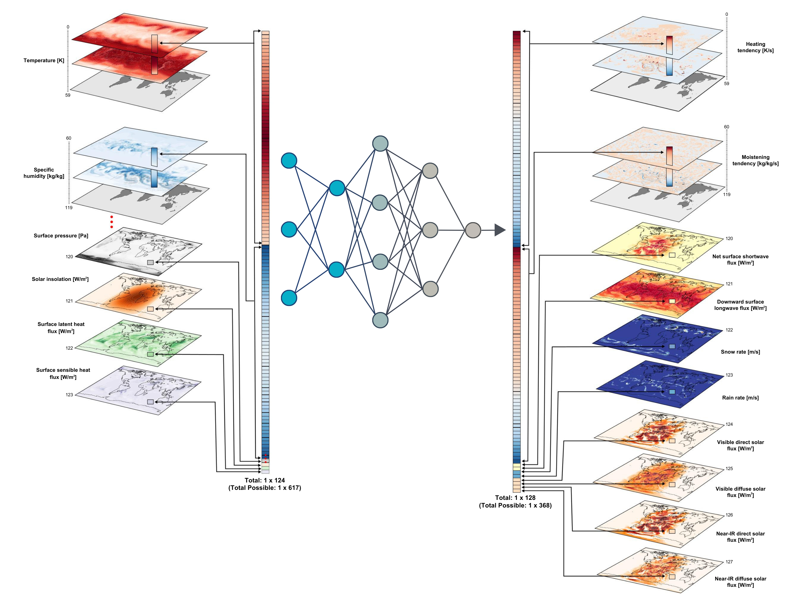

ClimSim: An open large-scale dataset for training high-resolution physics emulators in hybrid multi-scale climate simulators#
ClimSim is the largest-ever dataset designed for hybrid ML-physics research. It comprises multi-scale climate simulations, developed by a consortium of climate scientists and ML researchers. It consists of 5.7 billion pairs of multivariate input and output vectors that isolate the influence of locally-nested, high-resolution, high-fidelity physics on a host climate simulator’s macro-scale physical state. The dataset is global in coverage, spans multiple years at high sampling frequency, and is designed such that resulting emulators are compatible with downstream coupling into operational climate simulators. We implement a range of deterministic and stochastic regression baselines to highlight the ML challenges and their scoring.

Getting Started#
Models and Evaluation#
Demo Notebooks#
Online Testing#
Project Structure#
References#

Legal#
ClimSim uses the Apache 2.0 license for code found on the associated GitHub repo and the Creative Commons Attribution 4.0 license for data hosted on HuggingFace. The LICENSE file for the repo can be found in the top-level directory.